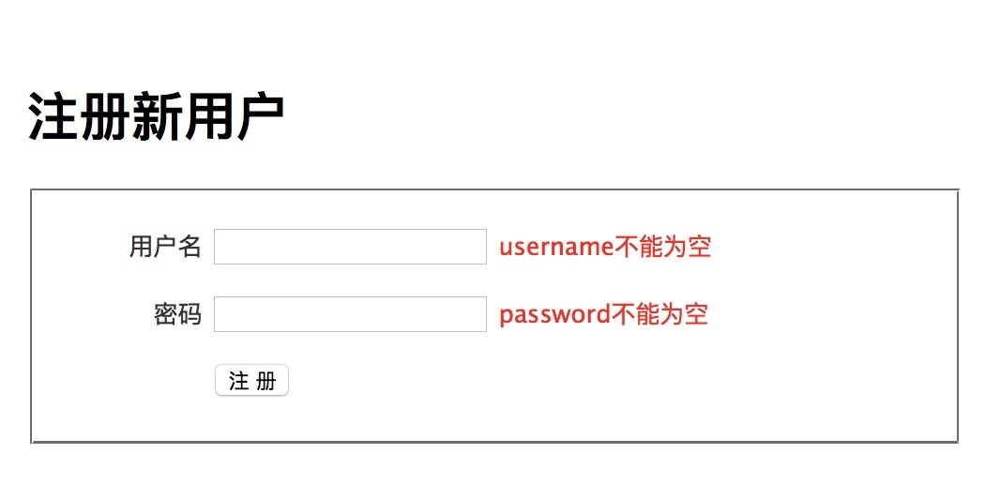
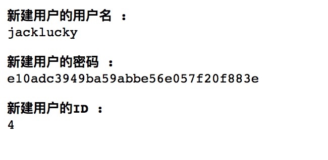
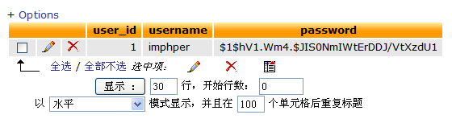

实现用户注册（功能实现）
在前面的小结中，我们主要学习了怎么使用视图。现在我们来解决表单提交，以及模型的创建问题。
丑陋的表单提交处理代码
修改 controller/users.php 文件，加入以下代码：
1 2 3 4 5 6 7 8 9 10 11 12 13 14 15 16 17 18 19 20 21 22 23 24 25 26 27 28 29
| function actionRegister() { $username = trim(strtolower(isset($_POST['username']) ? $_POST['username'] : '')); $password = isset($_POST['password']) ? $_POST['password'] : ''; $errors = array(); if (strlen($username) < 5) { $errors['username'][] = '用户名不能少于 5 个字符'; } if (strlen($username) > 15) { $errors['username'][] = '用户名不能超过 15 个字符'; } if (strlen($password) < 6) { $errors['password'][] = '密码不能少于 6 个字符'; } ..... 更多的验证代码 ..... 检查用户名是否重复 ..... 检查保存是否成功 ..... 如果失败，将错误信息存入视图 ..... 如果失败，将 POST 信息存入视图，以便在表单中重新显示提交的内容 }
|
上述代码可能和过去的做法类似，但是这些代码看着不恶心吗？
QeePHP 为表单提供了全面支持，并且允许开发者将表单和模型结合起来使用。这样一来，表单数据的过滤、验证，以及错误处理都可以自动完成，不需要开发者手工编码实现。关于如何使用表单，有专门的章节详细阐述。这里我们只简单的展示一下使用 QeePHP 表单模型带来的优势。
完善模型定义
时刻记住一点，QeePHP 是一个遵循“领域驱动开发”思想的框架。而领域驱动中，最重要的就是模型。而我们的大多数表单都是和模型有关的，所以在处理表单之前，首先要完善模型的定义。因为这些定义可以直接套入表单对象中，避免我们在不同的地方编写同样的逻辑，这就是 DRY 原则的最佳实践。
先前创建的 User 模型只是半成品，现在我们需要对其进行完善。一个模型由几个方面组成：
- 属性：定义模型有哪些属性、属性的类型以及属性的行为和验证规则等
- 行为：添加实现业务逻辑需要的方法，让模型逐步逼近实际的需求
- 数据：由属性和存储模型属性的数据表组成，但属性不一定要和数据表一一对应
- 关系：模型需要互相配合来实现业务需求，因此关系也是模型的一部分
完善模型的属性
打开模型的定义文件，在 __define() 方法中可以找到模型的详细定义。这些定义分为几个部分：
- 指定存储模型使用的数据表
- 属性和关联的定义，例如只读属性、虚拟属性、关联等
- 对属性的验证规则
- 安全性方面的定义
- 行为插件的定义
在 QeePHP 的模型中，属性本身具有多种特性：
- 是否是只读属性
- 是否是虚拟属性
- 是否有 getter 或 setter 方法
- 类型
- 验证规则
对于 todo 这样的简单应用，我们用不到这么多高级特性，所以上述内容了解一下就行了。
todo 应用中，user 模型只有两个主要属性：用户名和密码。根据需求，这两个属性有下列要求：
- 用户名应该是唯一的
- 用户一旦成功创建，就不能更改用户名，因此用户名必须是只读属性
- 用户名不能少于 5 个字符，不能多于 15 个字符，并且只能使用字母和数字组成
- 密码不能少于 6 个字符，不能多于 20 个字符
- 密码应该加密存储
现在我们一步步来实现这些要求。
修改 __define() 方法，禁止更新用户名：
1 2 3 4 5 6 7 8 9 10 11
| 'props' => array( ..... 'username' => array('readonly' => true), ..... ), * 指定更新数据库中的对象时，哪些属性的值不允许由外部提供 */ 'update_reject' => 'username',
|
继续：
1 2 3 4 5 6 7 8 9 10 11 12 13 14 15 16 17 18 19
| 'validations' => array ( 'username' => array ( array('not_empty', '用户名不能为空'), array('min_length', 5, '用户名不能少于 5 个字符'), array('max_length', 15, '用户名不能超过 15 个字符'), array('is_alnum', '用户名只能由字母和数字组成'), ), 'password' => array ( array('not_empty', '密码不能为空'), array('min_length', 6, '密码不能少于 6 个字符'), array('max_length', 20, '密码不能超过 20 个字符'), ), ),
|
经过简单的设置，大部分要求都可以由 QeePHP 来处理了，剩下的密码加密存储则可以借助现成的 acluser 行为插件来实现。
行为插件
虽然我们可以通过给 password 属性添加 getter 和 setter 方法来实现密码的加密，但 QeePHP 已经提供了现成的插件来帮助我们完成类似工作，并且提供了更丰富的特性。
acluser 行为插件应用到一个模型后，可以实现下列特征：
- 密码属性的自动加密
- 验证用户名和密码的正确性
- 验证用户名的唯一性
- 查询用户的基本属性和角色信息
要使用 acluser 插件，只需要修改 __define() 方法：
1 2 3 4 5 6 7 8 9 10 11
| 'behaviors' => 'acluser', 'behaviors_settings' => array ( 'acluser' => array( 'acl_data_props' => 'username', ), ),
|
acluser 插件的详细文档请参考后续文档
指定好 acluser 插件后，我们的 user 模型在属性方面就完善了。
完善模型的行为和关系
根据前面的需求分析，user 模型具有下列行为：
| 行为 |
说明 |
| validateLogin |
验证用户名和密码 |
| createTask |
创建属于该用户的任务 |
| loadTasks |
载入属于该用户的任务 |
由于 acluser 插件已经提供了验证用户名和密码的方法，validateLogin() 方法不需要我们自己实现了。下面来实现 createTask() 和 loadTasks() 方法。
修改 user 模型的类，加入下列代码：
1 2 3 4 5 6 7 8 9 10 11 12 13 14 15 16 17 18 19
| class User extends QDB_ActiveRecord_Abstract { * 创建属于当前用户的任务 * * @return Task */ function createTask($subject, $description = null) { $task = new Task(); $task->owner = $this; $task->subject = $subject; $task->description = $description; return $task; } ..... }
|
而 loadTasks() 方法也不需要我们去实现，因为 QeePHP 的 ORM 可以让我们直接通过属性访问一个模型关联的其他模型。所以我们只需要修改 __define() 方法，加入 user 模型和 task 模型的关联就可以了：
1 2 3 4 5
| 'props' => array( ..... 'tasks' => array(QDB::HAS_MANY => 'Task', 'target_key' => 'user_id'), ..... ),
|
OK，现在用户模型已经准备好了。
准备表单视图
QeePHP中有表单控件模块，但是使用起来有些繁琐不够灵活，后续会介绍他的使用方法，所以我们直接使用HTML写表单视图。在
app/view/users/register.php 文件的内容为：
1 2 3 4 5 6 7 8 9 10 11 12 13 14 15 16 17 18 19 20 21 22 23 24 25 26 27 28 29
| <?php $this->_extends('_layouts/default_layout'); ?> <?php $this->_block('contents'); ?> <form name="form_user" id="form_user" action="<?php echo url('users/register'); ?>" method="post"> <h1>注册新用户</h1> <fieldset> <p> <label for="username">用户名</label> <input type="text" name="username" id="username" /> <span class="error"><?php echo isset($form_error['username']) ? array_shift($form_error['username']) : '';?></span> </p> <p> <label for="password">密码</label> <input type="password" name="password" id="password" /> <span class="error"><?php echo isset($form_error['password']) ? array_shift($form_error['password']) : '';?></span> </p> <p> <label> </label> <input type="submit" name="Submit" value="注 册" /> </p> </fieldset> </form> <?php $this->_endblock(); ?>
|
记得在 todo/public/css/style.css 文件中加入表单样式
1 2 3
| form p label{display:inline-block; width: 80px; text-align:right; vertical-align: top;} form p span.error{ color:red;}
|
实现用户登录
修改 users 控制器的 actionRegister() 方法为：
1 2 3 4 5 6 7 8 9 10 11 12 13 14 15 16 17 18 19 20 21 22 23 24 25 26
| $form_error = array(); if ($this->_context->isPOST() && empty($form_error = User::meta()->validate($_POST)) ) { try { $user = new User($this->_context->post()); $user->save(); dump($user->username, '新建用户的用户名'); dump($user->password, '新建用户的密码'); dump($user->id(), '新建用户的ID'); exit; } catch (AclUser_DuplicateUsernameException $ex) { $form_error['username'][] = "您要注册用户名 {$user->username} 已经存在了"; } } $this->_view['form_error'] = $form_error;
|
现在用浏览器访问 http://localhost/todo/public/index.php?controller=users&action=register ，然后不输入任何内容就点击“提交”按钮，将可以看到如下界面：

现在输入用户名为：jacklucky，密码为 123456，提交后会看到如下内容：

通过 phpMyAdmin 可以看到刚刚输入的信息已经存入数据库了：

为了方便后续开发，我们再修改一下 users 控制器的 actionRegister() 方法：
1 2 3 4 5
| dump($user->username, '新建用户的用户名'); dump($user->password, '新建用户的密码'); dump($user->id(), '新建用户的ID'); exit;
|
改为：
1 2
| return $this->_redirect(url('default/index'));
|
现在读者朋友们可以发挥自己的想象力，尝试输入不同的内容来测试表单的验证规则、过滤器设置，以及对重复用户名的检查 :)